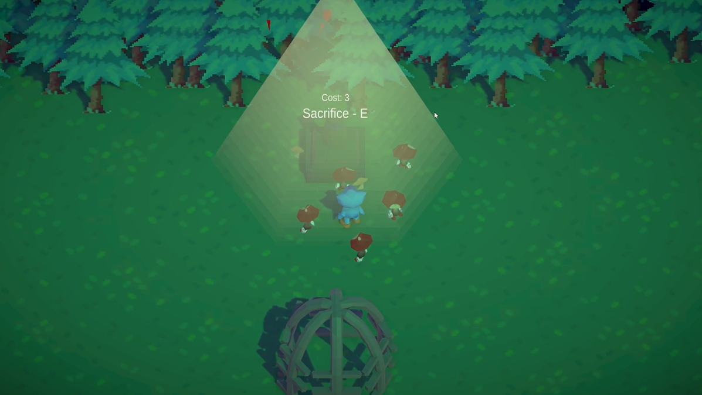
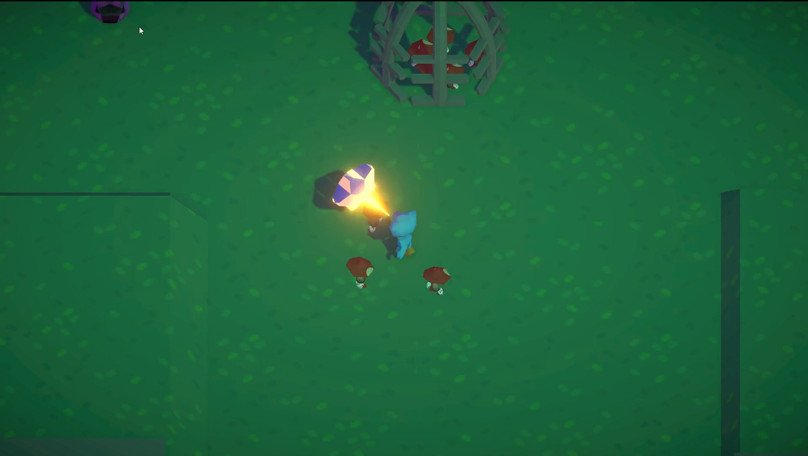

Starstruck




This is a project that I made together with 4 other people and was made during a Game Jam lasting 48 hours with the theme Worship. In this game you play as a character that can shoot star-shaped projectiles and you try to free as many small mushroom guys as possible. These mushroom people gather around you and act as a shield, but can also be sacrificed at an altar in order to upgrade your character. This was the first Game Jam I’ve ever done, and the format of working together with others to make a complete experience in such a short time was hard to adjust to. In the end, I felt that this was a good lesson for me though, since it has been pretty easy for me to abandon a project before completion.
Some of my contributions:
- AI movement for the mushroom people
- Player Movement
- Part of the upgrading system
- Player Stats system used with the upgrading system
- Lighting
- Level Design
- Visual Effects like the player projectile
- Other Game Design aspects